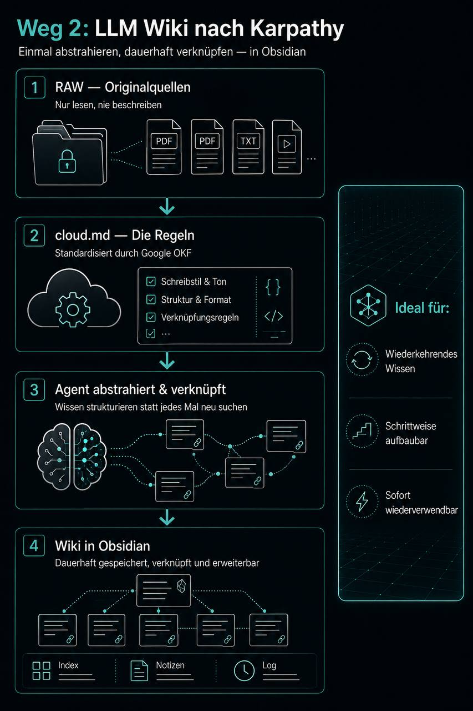
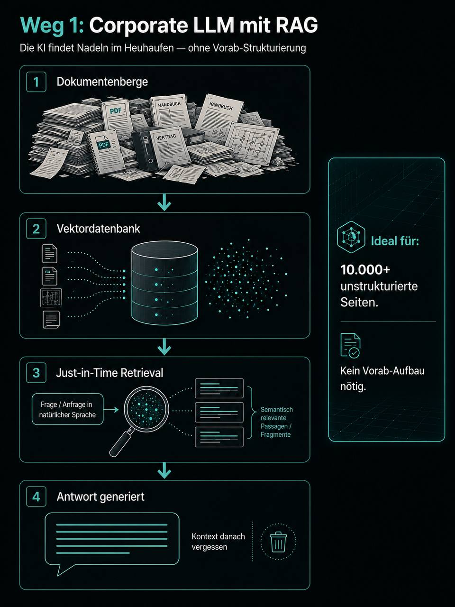

Hermes Agent + Obsidian + N8n auf deinem eigenen Server. Eine Infrastruktur, die 24/7 für dich arbeitet – ohne SaaS-Abos, ohne Daten an fremden Clouds, ohne laufende Token-Kosten.
Hermes — verbindet CRM, ERP, Dokumente, Workflows und mehr
30 Tabs offen. CRM spricht nicht mit dem Postfach. Deine "KI-Workflows" sind Copy-Paste in ChatGPT.
Jedes Tool kostet monatlich. CRM, Projektmanagement, Automatisierung, KI – schnell sind es 500+ € pro Monat für Dienste, die du nicht besitzt.
Deine Kundendaten, Strategien und Prozesse liegen auf Servern, die dir nicht gehören. Datenschutz ist ein Versprechen, nicht deine Kontrolle.
Tools ohne Architektur verheddern sich. Halluzinationen, Endlosschleifen, unbrauchbare Ausgaben. Ohne Betriebssystem ist KI nur ein Chatbot, der alles vergisst.
Drei Komponenten. Ein Server. Die Drähte in deiner Hand.
Dein persönlicher KI-Begleiter (PA) und Agenten-Entwickler. Er lernt deine Firmenstruktur kennen, speichert Wissen in Obsidian und übernimmt Aufgaben aktiv — ein Infrastruktur-Baustein, der mit deinem Bewusstsein wächst. Hermes ist nicht das Gehirn, sondern der Vermittler: zwischen dir, deinen Daten und deinen Werkzeugen.
Open Source · MITDein zweites Gehirn. Der Vault liegt als Markdown-Dateien auf deinem Server — die Agenten haben 24/7 Zugriff, auch wenn dein Rechner aus ist. Die Obsidian-App läuft lokal bei dir und synchronisiert per Git. Verlinkt, durchsuchbar — die Drähte in deiner Hand.
Server-Vault · Git-SyncDeine komplexen Automatisierungen, die ohne Softwarekosten auf deinem Server laufen – erstellt, gewartet und optimiert von Hermes auf Basis deiner Firmenstruktur und deinem Kontext.
Self-hosted · Fair-code500+ App-Integrationen über einen MCP-Server. Google Workspace, Notion, Slack, Stripe, Meta Ads – deine Agenten sprechen mit jedem Tool.
500+ Apps · 1 MCP-ServerAlle Komponenten laufen auf einem Hetzner-Server (ab ~5 €/Monat). Keine Cloud-Abhängigkeit. Keine Daten verlassen deinen Server ohne deine Erlaubnis. Du besitzt die Infrastruktur, die Dateien und das Wissen – für immer.
Die Infrastruktur ist modular. Wenn dein Unternehmen wächst, lassen sich weitere Open-Source-Systeme auf demselben Server dazunehmen — ohne Lizenzkosten, ohne SaaS-Abhängigkeit.
Open-Source-CRM (27.7k ⭐ auf GitHub). Kontakte, Deals, Pipeline – verbunden mit N8n und Hermes. Eine Option, wenn dein Vertrieb strukturierter werden soll.
github.com/twentyhq/twentyKomplett kostenloses Open-Source-ERP (24.7k ⭐). Inventar, Aufträge, Buchhaltung, Produktion. Eine Option, wenn du ein ERP-System ersetzen oder einführen willst – ohne Lizenzkosten.
github.com/frappe/erpnextOpen-Source-BI-Dashboards (40k+ ⭐). Daten visualisieren, Reports erstellen – direkt aus deiner Datenbank. Eine Option, wenn du mehr Sichtbarkeit brauchst.
github.com/metabase/metabaseOpen-Source-Newsletter-Tool (15k+ ⭐). E-Mail-Marketing selbst gehostet. Eine Option, wenn du Newsletter ohne SaaS-Kosten verschicken willst.
github.com/knadh/listmonkAlle Tools sind Open Source, selbst hostbar und lassen sich über N8n + Hermes miteinander verbinden. Wir helfen dir, die passenden für deine Struktur zu wählen und einzurichten.
Diese Werkzeuge eröffnen neue Möglichkeiten: unabhängig von klassischen Lizenzmodellen, flexibel einsetzbar und an die eigenen Anforderungen anpassbar. Dafür braucht es keine Entwickler – aber Menschen, die bereit sind, Verantwortung zu übernehmen, Zusammenhänge zu verstehen und gemeinsam Kompetenz aufzubauen.
Genau darin liegt für uns der eigentliche Wert: Mit jeder Schulung wächst nicht nur das Wissen über ein einzelnes Tool, sondern das Verständnis dafür, wie KI im Unternehmen sinnvoll eingesetzt und weiterentwickelt werden kann. Aus Anwendern werden Schritt für Schritt Mitgestalter. Wissen bleibt im Unternehmen. Abhängigkeiten werden reduziert. Und aus einzelnen KI-Anwendungen entsteht nach und nach eine eigene Fähigkeit zur Weiterentwicklung.
Das verstehen wir unter Hermetik: Technologie nicht nur zu bedienen, sondern ihre Prinzipien zu verstehen – und sie in die bestehende Organisation so einzubetten, dass daraus etwas Eigenes wachsen kann. Diesen Weg gehen wir nicht mit einem fertigen System, das wir überstülpen. Wir begleiten das Unternehmen dabei, die Fähigkeiten selbst aufzubauen.
Zwei Hermes-Instanzen, ein Server, ein Wissensspeicher – alles verbunden.
Hermes Agent (Default-Profil) · bezahltes Modell · Manager ·-terminal/IDE
Hermes Agent (Worker-Profil) · OmniRoute · N8n · Docker · ab 5 €/Monat
115+ KI-Modelle · kein API-Key · localhost:20128
Briefings · Erinnerungen · Ergebnis-Pushs – direkt auf dein Handy
Der Manager entfernt vor der Weitergabe an Worker alle Firmennamen, KPIs und Personen. Die Worker erhalten nur anonymisierte Problem-Profile – nützlich genug für gute Ergebnisse, sicher genug für echte Daten.
Nicht jede Aufgabe braucht denselben Agenten. Drei Ebenen, klug kombiniert.
115+ kostenlose Modelle für Massen-Aufgaben: Mitbewerber-Beobachtung, Content-Ideen, Lead-Recherche. Läuft 24/7 ohne Token-Kosten.
DeepSeek, GPT-5.4-mini, u.v.m.
0 € · anonymisiertWenn Qualität zählt: Claude, GPT-4 oder DeepSeek-V3 für Strategie, USP-Refinement, komplexe Analysen. Token-Kosten bleiben minimal – nur für Aufgaben, die es wert sind.
Claude Sonnet, GPT-4o, DeepSeek-V3
~5-15 €/Monat · gezieltWenn KI nicht mit deinen Daten lernen soll: Ollama läuft lokal auf deinem Server, kein Daten verlässt je dein System. Das Corporate LLM Relationflow für sensible Kunden- und Unternehmensdaten.
Llama 3, Mistral, Qwen – lokal gehostet
100% privat · dein ServerDer Manager-Agent klassifiziert jede Aufgabe: Öffentlich/recherche-basiert → Free-Tier (OmniRoute). Strategisch/kreativ → Premium-Tier (bezahlte Tokens). Sensibel/intern → Private-Tier (Ollama/Relationflow, Daten verlassen niemals den Server). So bekommt jede Aufgabe genau die Intelligenz, die sie braucht – zum besten Preis und höchster Sicherheit.
Deine Agenten sprechen mit jedem Tool – ohne eine einzige Zeile Integrations-Code.
Gmail, Calendar, Drive, Sheets – Agenten lesen und schreiben E-Mails, Termine, Dokumente.
Kanban-Boards automatisch befüllen, Team-Benachrichtigungen auslösen, Aufgaben erstellen.
Zahlungen überwachen, Deals tracken, Revenue-Report generieren – alles automatisch.
Werbeanzeigen-Performance abrufen, Leads automatisch qualifizieren und ins CRM einspielen.
Repos verwalten, Deployments triggern, Issues automatisch erstellen und zuordnen.
URLs scrapen, Web-Recherche durchführen, Wettbewerbsseiten automatisch analysieren.
Composio ist die Verbindungsschicht zwischen Hermes Agent und deinen Tools. Statt für jedes Tool eine eigene API-Integration zu bauen, verbindet Composio 500+ Apps über einen einzigen MCP-Server. Authentifizierung, Trigger und Aktionen – alles verwaltet. Deine Agenten sagen "Schreibe eine E-Mail an Kunde X" und Composio erledigt den Rest.
Du beschreibst, was passieren soll. Hermes baut den Workflow. N8n führt ihn aus.
Lead kommt über Webformular → wird ins CRM gespeichert → Begrüßungsmail geht automatisch raus. Wie unser echter Beispiel-Workflow.
Workflow 1 · LiveWhatsApp-Nachrichten sammeln, Produktionsdaten auswerten, Report generieren und per Telegram pushen – jeden Abend automatisch.
Workflow 2 · LiveKunden fragt auf der Website → Hermes antwortet aus deinem Obsidian-Wissen → Termin wird direkt gebucht.
Workflow 4 · LiveDu sagst: „Als Dozent muss ich ein Klassenbuch führen. Die Zeiten werden auf Zoom getrackt, der Videofortschritt auch. In Notion gibt es die Aufzeichnungen des Lernunterrichts. Alles wird dokumentiert und später als PDF-Wochenberichte in Google Sheets geladen. Aus den Erkenntnissen der Schüler und ihren Herausforderungen extrahieren wir authentischen Content aus der Praxis — der als Ideen am Morgen bei mir auf dem Tisch landet, wenn die Kreativität und Genialität noch am größten ist." Hermes erstellt den kompletten N8n-Workflow direkt über die N8n-MCP-Schnittstelle — kein Drag-and-Drop, kein manueller Import. Hermes überwacht den Workflow laufend, behebt Fehler selbst und entwickelt ihn weiter, wenn sich deine Prozesse ändern. Du beschreibst, Hermes baut und pflegt, N8n läuft. Die Workflows liegen als Open-Source-Dateien in diesem Repo.
In vier Schritten zu deinem eigenen KI-Betriebssystem. Wir machen das zusammen.
Wir richten einen eigenen Linux-Server ein – Docker, SSH, Firewall. Du bist der einzige mit Zugriff.
Hermes als KI-Agent-Framework installieren. OmniRoute als kostenlosen Gateway für 115+ Modelle ohne API-Key.
Dein Wissensspeicher als Markdown-Dateien. N8n verbindet Hermes mit Postfach, Kalender, Notion – automatisierte Workflows, die 24/7 laufen.
Cron-Jobs für Mitbewerber-Beobachtung, Content-Ideen, Lead-Recherche. Der Gateway feuert automatisch – du bekommst Ergebnisse per Telegram.
Die ehrliche Aufstellung. Du besitzt alles, zahlst fast nichts.
~5 € / Monat
CX22, 2 GB RAM, Docker. Vollständig unter deiner Kontrolle.
0 € / Monat
Alle Open Source. Keine Abo-Kosten.
0 € / Monat
115+ kostenlose Modelle. Kein API-Key nötig.
~5-15 € / Monat
Nur für kurze Sanitization-Aufgaben. Minimaler Token-Verbrauch.
Gesamt: ca. 10-20 € / Monat für dein eigenes KI-Betriebssystem
Zum Vergleich: Ein einzelner Agent auf GPT-4-API kostet schnell 100-500 € / Monat. SaaS-Stacks oft 500+ €.
Zwei Wege, dein Firmenwissen für die KI nutzbar zu machen — vom persönlichen Agenten bis zur Firmenweiten Lösung.
Der Ansatz für deinen Hermes PA-Agenten: Statt bei jeder Frage neu zu suchen, kompiliert der Agent Wissen einmalig zu verknüpften Wiki-Seiten in Obsidian — deinem zweiten Gehirn. Jede Quelle wird abstrahiert, mit bestehendem Wissen verknüpft und dauerhaft gespeichert. Beim nächsten Zugriff ist alles schon da — verknüpft, geprüft, widerspruchsfrei. Ideal für persönliches, wachsendes Wissen, das wiederkehrende Fragen beantwortet.

Originaldokumente: PDFs, Transkripte, Web-Clips. Der Agent liest hier, schreibt aber niemals hinein. Unveränderlich. Bei Fehlern lässt sich daran korrigieren.
Nur lesenKonzept-Seiten, Entitäten, Vergleiche. Der Agent abstrahiert, verknüpft, aktualisiert. Jede Seite hat Quellen, Tags und Querverweise. Eine wachsende Wissensbasis in Obsidian — deinem zweiten Gehirn.
Agent schreibtDie Regeln, die steuern, was der Agent tut, wenn neue Quellen landen. Ohne sie wäre er ein Chatbot. Mit ihr wird er zum Kurator, der das Wiki pflegt. Standardisiert durch Googles OKF-Format.
SteuerungPDF, Transkript, Web-Clip
Regeln und Format laden
Neue Wiki-Seiten oder bestehende ergänzen
Wenn das Wissen nicht nur für eine Person, sondern für die ganze Firma nutzbar werden soll: Alle Dokumente liegen in einer Vektordatenbank. Bei jeder Frage sucht die KI nach passenden Passagen, generiert eine Antwort und vergisst den Zusammenhang wieder. Ideal für große, unstrukturierte Dokumentenberge — Handbücher, Schaltpläne, Verträge. Die KI findet Nadeln im Heuhaufen, ohne dass jemand vorab alles lesen und strukturieren muss. Diesen Ansatz verfolgen wir über RelationFlow und dozieren ihn in unserer Mitarbeiterschulung.

Alle Dokumente werden als Embeddings gespeichert. Die KI sucht semantisch — nicht nach Stichworten, sondern nach Bedeutung.
DokumentenbasisBei jeder Frage: passende Passagen finden → in den Kontext laden → Antwort generieren. Kein Vorab-Aufbau nötig. Funktioniert mit 10.000+ Seiten.
SkalierbarSelf-hosted oder über Corporate API. Deine Daten verlassen nicht den Server. Zugriffskontrolle pro Abteilung. Auditierbar.
DatenschutzWir dozieren diesen Ansatz in unserer KI-Schulung für Mitarbeiter — 100% gefördert über QCG/Bildungsgutschein. Deine Mitarbeiter lernen, wie sie RAG-Systeme in der Praxis einsetzen und das Firmenwissen für die KI nutzbar machen.
Förder-Info anfragen →Weg 1 (LLM Wiki) ist richtig für deinen persönlichen PA-Agenten — wenn dein Wissen wächst, du wiederkehrende Fragen hast und die KI Zusammenhänge verstehen soll. Weg 2 (RAG über RelationFlow) ist richtig, wenn du das Wissen firmenweit verfügbar machen willst — über 10.000+ Dokumente, ohne Vorab-Strukturierung. Wir testen beide Ansätze, bewerten sie an deiner Firmenstruktur und empfehlen den passenden — oder eine Kombination.
Wir richten die Infrastruktur ein – maßgeschneidert für dein Unternehmen. Hermes + Obsidian + N8n, auf deinem Server, mit Telegram-Anbindung.
Hermetikmarketing · KI-Agentur für Sondermaschinenbau & KMU
timo@hermetikmarketing.de
Wir bauen das, was wir empfehlen – und testen es selbst. Schau dir an, wie wir es einsetzen.
Unsere Hauptseite – KI-Beratung, KI-Agenten, Weiterbildung für den Mittelstand. Unternehmensorchester: Menschen, Prozesse, Künstliche Intelligenz.
Zur Webseite →Wir testen gerade Twenty CRM als Open-Source-CRM auf unserem Hetzner-Server. Leads, Deals, Pipeline – verbunden mit N8n und Hermes. ART kommt später.
Live getestetWir glauben: Ein Unternehmen wird nicht besser, weil ein Instrument lauter spielt. Es wird besser, wenn alles zusammenspielt. KI ohne Richtung wird unruhig. KI ohne Struktur bleibt Spielerei. Wir bauen die Struktur – Hermes, Obsidian, N8n, Composio, Twenty CRM – auf deinem Server, unter deiner Kontrolle.